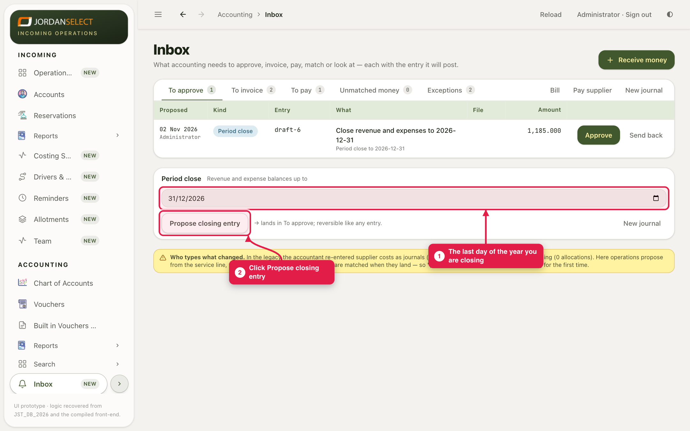
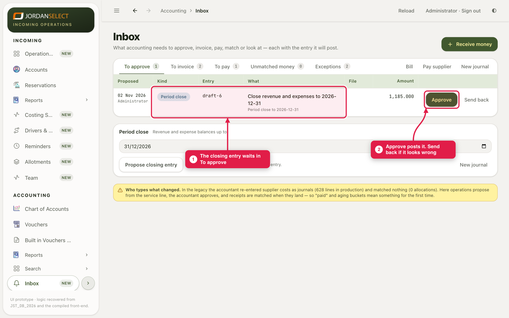
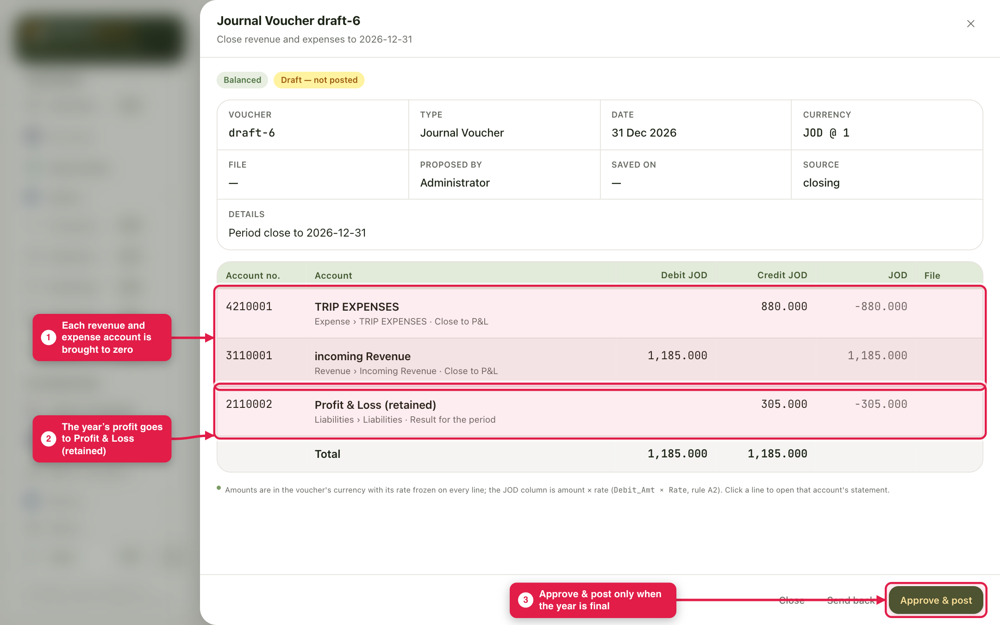

Bring every revenue and expense account to zero and move the year’s result to Profit & Loss (retained).
WhoThe accountant proposes · the finance manager agrees
WhereAccounting → Inbox → Period close
Takes5 minutes, after the year’s checks
You needAll the year’s invoices, bills and payments posted
Before you start
Every invoice, bill and payment for the year is posted. To approve is empty.
The trial balance to the last day of the year balances (guide 09).
The finance manager agrees the year is finished.
No rush on 1 JanuaryThe new year opens by itself on 1 January, with the old year’s balances carried in, while the old year stays open for late bills and invoices. Close it only when it is really finished, weeks later if need be. See guide 11.
1. Propose the closing entry
1
Open Accounting → Inbox. Under Period close, set the date to the last day of the year you are closing, for example 31/12/2026. Click Propose closing entry.

The Period close box at the bottom of the Inbox.
2
Nothing is posted yet. The closing entry waits in To approve, like any other draft.

The proposed closing entry.
2. Check it, then approve
3
Click the row to open it. Each revenue and expense account has a line that brings it to zero. The difference, the year’s profit, goes to Profit & Loss (retained). Debit and credit totals must be the same.

Revenue 1,185.000 less expenses 880.000 leaves 305.000 profit.
4
When the finance manager agrees, click Approve & post. If something looks wrong, click Send back instead, fix the year, and propose again.
Only when the year is finalAfter the year is closed, every new posting dated in that year changes its result, and the closing entry is not recalculated. If that happens, reverse the closing entry (guide 01) and propose a new one.
3. Check your work
A trial balance to the last day of the year shows revenue and expense accounts at zero (turn on Show Zero Balances to see them).
Profit & Loss (retained) has gone up by the year’s profit.
Questions? Ask the finance manager. · Last checked: 11 Nov 2026 · Screens shown are from a test copy of the CRM with made-up data.